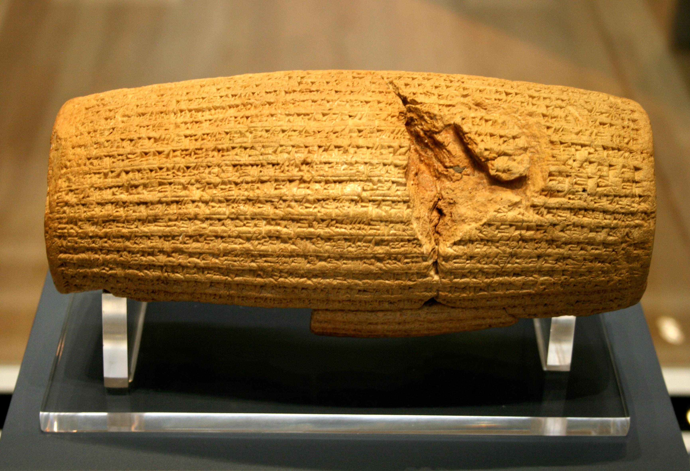

دوران ایران باستان
دوران ایران باستان یا تاریخ ایران باستان از پیدایش فرمانروایی ماد تا پایان شاهنشاهی ساسانی و حمله اعراب به ایران است. این دوران به دلیل تنوع فرهنگی و تمدنهای مختلف، یکی از غنیترین دورههای تاریخ ایران محسوب میشود.
ایلامیان
پیدایش دولت ایلام (۶۴۰ –۳۲۰۰) پیش از میلاد به عنوان نخستین قدرت متمرکز در عرصه فلات ایران، آغازی بود برای تأثیر فکر، هنر و تمدن مردم فلات ایران بر دیگر تمدنهای پیرامون. ایلامیان با ایجاد ارتباطاتی فرهنگی و تجاری با تمدنهای بینالنهرین و مصر، نقشی کلیدی در تاریخ این منطقه ایفا کردند. آثار کشف شده از تمدن ایلامیان نشاندهنده یک جامعه پیچیده و پیشرفته با نظامهای اداری و مذهبی متنوع است.
پادشاهی ماد
تا هزاره دوم پیش از میلاد، مردم ایرانی باستان از استپ اوراسیا به آنچه هماکنون ایران خوانده میشود، وارد شدند. پادشاهی ماد یکی از نخستین حکومتهای بزرگ ایرانی بود که به رهبری دیاکو تأسیس شد. مادها توانستند با اتحاد و سازماندهی خود، در برابر تهدیدات خارجی ایستادگی کنند و در نهایت، دولت خود را در هگمتانه (همدان) پایهگذاری کنند. این پادشاهی بهعنوان الگویی برای سایر حکومتهای ایرانی از جمله هخامنشیان عمل کرد.
شاهنشاهی هخامنشی
شاهنشاهی هخامنشی یکی از بزرگترین امپراتوریهای تاریخ است که از ۵۵۰ تا ۳۳۰ پیش از میلاد بر بخشهای وسیعی از خاورمیانه و بخشی از اروپا و شمال آفریقا حکومت میکرد. این دوره با ویژگیهای زیر مشخص میشود:
- تأسیس: این امپراتوری توسط کوروش بزرگ تأسیس شد. او با فتح بابل و لیدی، قلمرو خود را گسترش داد و به عنوان یک فرمانروای عادل و مدبر شناخته میشد.
- گسترش: شاهنشاهی هخامنشی شامل سرزمینهای امروزی ایران، عراق، ترکیه، سوریه، مصر و بخشهایی از آسیای مرکزی و هند بود. این امپراتوری به دلیل وسعتش، تنوع فرهنگی و زبانی بسیاری داشت.
- مدیریت: هخامنشیان با ایجاد یک نظام اداری کارآمد و تقسیم سرزمین به ساتراپیها (استانها) به مدیریت بهتر کشور پرداختند. هر ساتراپی تحت نظارت یک ساتراپ (فرماندار) اداره میشد.
- فرهنگ: این دوره شاهد شکوفایی هنر و معماری بود. بناهایی چون تخت جمشید و آرامگاه کوروش در پاسارگاد از جمله آثار برجسته این دورهاند و نشاندهنده هنر و معماری پیشرفته ایرانیان است.
- زبان: زبان رسمی این امپراتوری، زبان فارسی باستان بود و متون آن به خط میخی نوشته میشد. این زبانها به گسترش فرهنگ و ادبیات ایرانی کمک کردند.
- سقوط: شاهنشاهی هخامنشی بهدست اسکندر مقدونی در ۳۳۰ پیش از میلاد سقوط کرد. پس از این رویداد، بسیاری از سنتها و فرهنگهای هخامنشی تحت تأثیر فرهنگ هلنی قرار گرفتند.